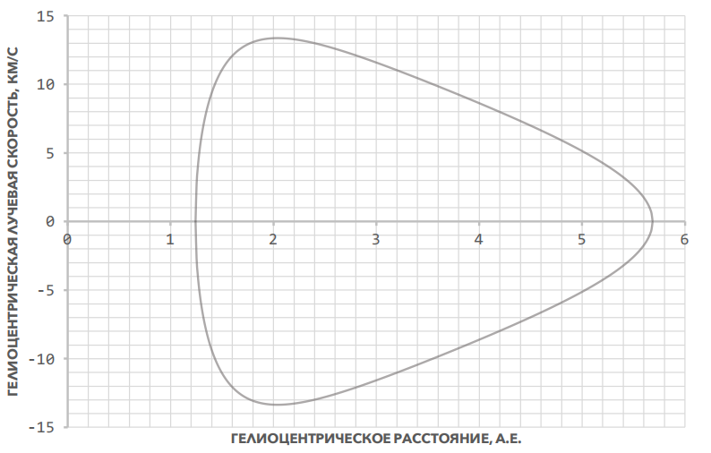

X18 (2018) — English translation
Comet 67P/Churyumov-Gerasimenko was discovered on October 23, 1969 by Soviet astronomer Klim Churyumov in Kyiv using photographic plates of another comet taken by Svetlana Gerasimenko in September at the Alma-Ata Observatory. At first it was considered a fragment of 32P/Comas Sol, but then it turned out that the object was moving in a completely different orbit.
One possible way to accurately study the orbit is spectral analysis. The emission spectrum of the comet is shifted relative to the reference lines of atoms and radicals due to the Doppler effect. From this displacement, it is possible to calculate the projection of the comet's velocity onto the line of sight (the ray connecting the observer and the comet) - the radial velocity.

The graph shows the dependence $v_r(r)$ of the radial velocity of object 67P on its heliocentric distance r (the observer is placed at the center of the Sun). Solar mass $M_S$, gravitational constant $G$, $1~\text{a.е}$ = distance from Earth to Sun ($\textit{но численные значения этих величин не заданы}$).
On February 10, 2015, the Sun was exactly between the comet Churyumov-Gerasimenko and the Earth, and the distance between the latter was $d_0=3{,}70~\text{а.е}$. Just six months later, on August 13, the comet was recorded passing the perihelion of its orbit.
The gravitational influence of the large planets of the solar system can significantly change the orbits of other bodies. Computer modeling showed that before 1959, the perihelion of comet 67P/Churyumov-Gerasimenko was at a distance of $q_l=2{,}70~\text{а.е}$. from the Sun. As a result of interaction with Jupiter, this distance decreased, while the eccentricity remained virtually unchanged. Since then, the orbit has not been disturbed anymore.
Source: https://pho.rs/p/317